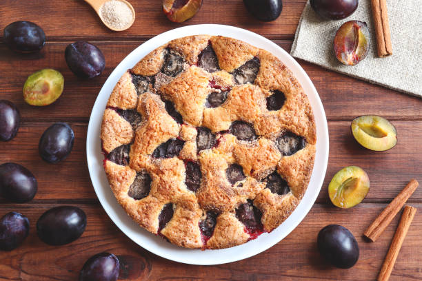

Plum Torte

Delightful Summer Plum Torte: A Perfect Pairing with Coffee or Tea
The iconic New York Times Plum Torte recipe is a breeze to whip up and is a delicious way to showcase juicy summer plums. This cake is both rich and airy, incredibly moist, just the right amount of sweetness, and pairs perfectly with a steaming cup of coffee or tea.
Ingredients
- 3/4 cup sugar
- 1/2 cup unsalted butter
- 1 cup unbleached flour, sifted
- 1 teaspoon baking powder
- Pinch of salt
- 24 halves pitted purple plums
- Sugar and cinnamon for topping
Steps
- Preheat oven to 350 degrees.
- Cream sugar and butter in a bowel. dd flour, baking powder, salt and eggs, and beat well.
- Spoon the batter into a spring form of 8, 9 or 10 inches. Place the plum halves skin side up on top of the batter. Sprinkle lightly with sugar, depending on the sweetness of the fruit. Sprinkle with about 1 teaspoon of cinnamon, or to taste.
- Bake for 40 to 50 minutes. Remove and cool; refrigerate or freeze if desired (but first, double-wrap the tortes in foil, place in a plastic bag, and seal). Or cool to lukewarm, and serve.